2TB内存，160核服务器，我们有32台~
原文：https://mp.weixin.qq.com/s?__biz=MzAwMzIzOTk5OQ==&mid=2247538802&idx=3&sn=c592691a71dd885259662c5d7bd136ef&chksm=9b3c2122ac4ba834b9fefd34b301a1acf1ec61e8e0e4bb3786990cad16af272c398ec26cb1f5#rd 合集：服务器
到底多少配置
总听用户吐槽在市面上买服务器的时候上当受骗，有些官网上宣传时明晃晃的显示512GB、64线程的服务器，但实际购买产品后发现那是机器上限，用户实际能调用的最大的配置得打个半折。不能让劣币逐良币，是时候让大家明白真相了。以下列出的配置都是我能给用户实际可调用的配置，而不是机器的配置(银行里有多少钱没用，多少是你账户里的才有用)。 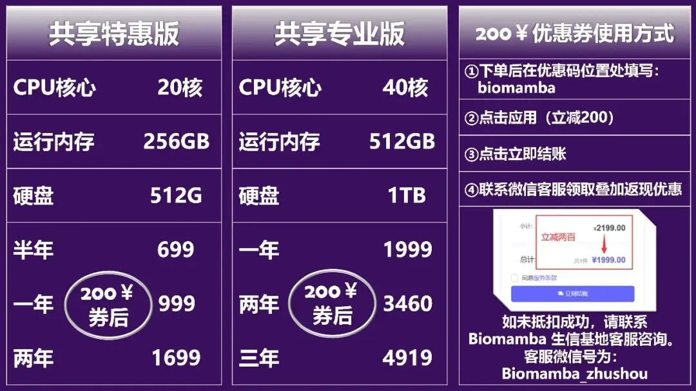 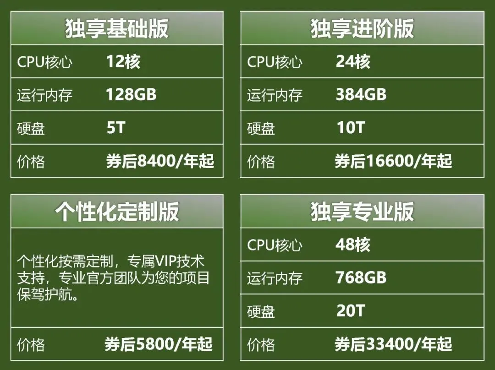 正经论机器的物理配置，西柚云计算节点是2TB、160核心的。而这样的计算节点，我们一共配置了数十台，甚至还允许大家在计算节点任意穿梭，想去哪就去哪，想用哪个节点就用哪个节点。但是我们也没拿节点的参数去忽悠客户啊(没针对谁，请勿对号入座~)。
正经论机器的物理配置，西柚云计算节点是2TB、160核心的。而这样的计算节点，我们一共配置了数十台，甚至还允许大家在计算节点任意穿梭，想去哪就去哪，想用哪个节点就用哪个节点。但是我们也没拿节点的参数去忽悠客户啊(没针对谁，请勿对号入座~)。
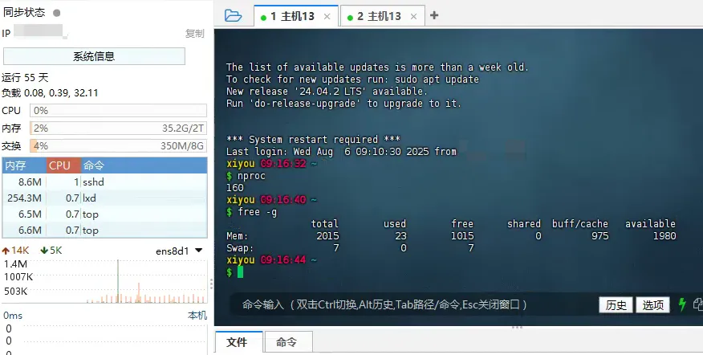
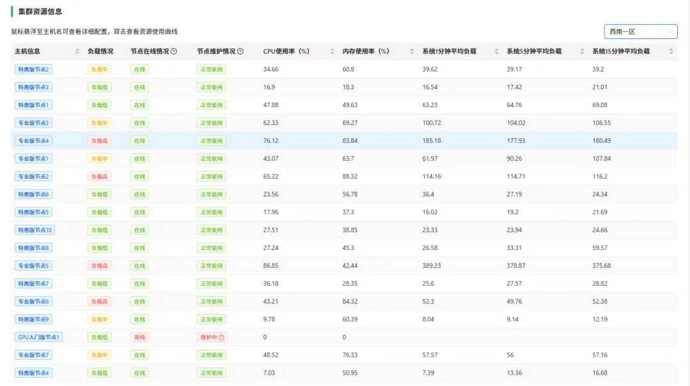
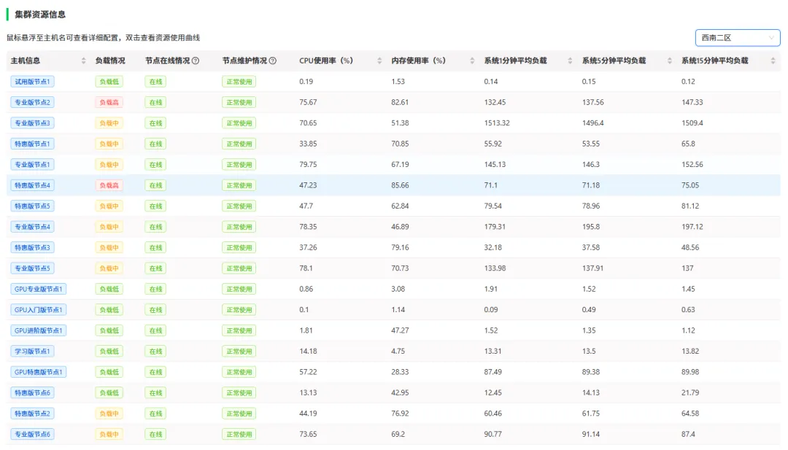
如果你对服务器比较迷茫，那么你可以先行学习以下教程：十小时学会Linux 生信Linux及服务器使用技巧
西柚云服务器
一、升级配置
公众号内的粉丝大都是研究单细胞测序的，现在动辄百万细胞级的数据集，拿自己8G内存笔记本显然无法满足分析需求(不推荐用自己的电脑做生信)。以下为各档位服务器的配置，起步256GB 、20线程 的配置足够为你的大数据集保驾护航：
二、开箱即用
在制作教程时我们发现，大家的设备、R语言、Rstudio的版本与我有所出入，那就意味着大家运行我的代码时由于版本的问题会遇到报错。本公众号中的大部分教程都在西柚云中录制，如果我们都在同样的环境下进行操作，就可以大大节约学习成本。这里放一个实际使用时的测试视频：
** **
我们将布置一系列镜像环境，例如 开箱即用的单细胞分析镜像，可以配合我们的scRNA-seq，从小白到文献复现大神！课程，完成一站式的代码学习，无需操心任何数据与环境问题，因为你们可以拿到完全一模一样的镜像克隆。
** **
三、独立环境
1、传统共享服务器
传统共享服务器场景下，所有用户共享底层物理资源，一个用户运行大型程序，就可能抢占大量内存与CPU，导致其他用户操作卡顿，系统整体性能受限。不知道大家有没有在服务器群里和其它用户吵架的经历(绷不住了)。一个大任务可能就会让同台服务器的所有其它用户干瞪眼。
2、西柚云大禹系统
而西柚云的虚拟机系统凭借先进虚拟化技术，为每个虚拟机精心打造相互隔离的虚拟环境。计算资源精准分配，内存、存储和网络资源也 “各自圈定领地”。这种深度隔离，如同为每个系统构建起专属的 “金丝雀笼”，不同虚拟机间资源往来 “老死不相往来”，彻底避免了资源冲突和性能干扰，系统稳定性与安全性得以质的飞跃。当然，记得合理分配计算资源，并不是调用的资源越多计算速度就越快：调用的线程越多就算的越快嘛?
四、技术支持
做生信分析难免会遇到环境配置和软件安装的问题，自己一个个去搜软件安装办法和依赖环境效率过低，而作为专业的生信服务器，西柚云的生信技术人员已经在服务器中预装了上千款生信软件/R包。即使是没有预装的R包也可以通过白嫖五次技术支持来场外求助
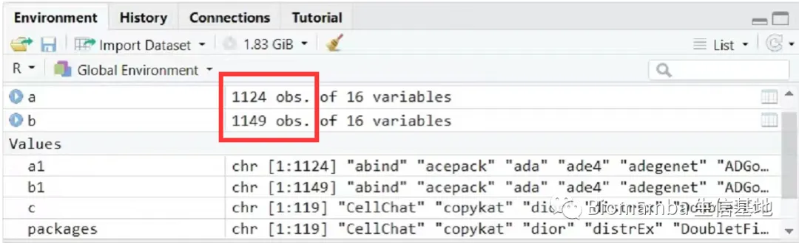
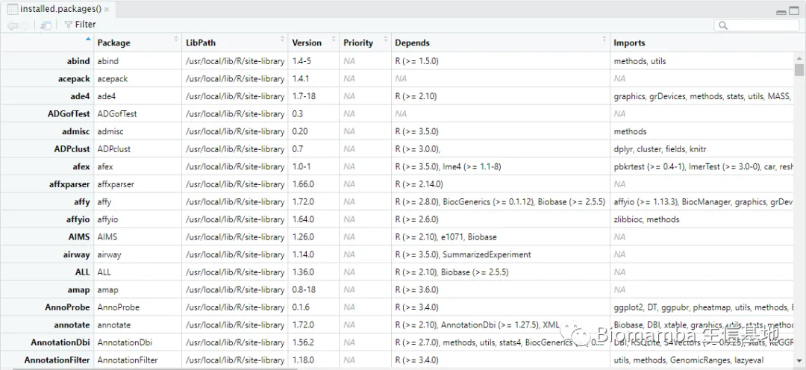
五、不用关机
这点我想大家深有体会，很多软件或函数任务运行时可能会花费数天时间，在本地电脑运行期间若自己的电脑若遇到断电、断网等问题，运行中的任务则会付之一炬。而服务器在机房稳定运行、永不关机，在服务器中执行任务时，无论是挂载在Linux 还是用Rstudio-server 运行，即使本地的电脑掉线或关机，服务器依然可以继续执行任务，(程序可以自己跑的，不用盯着、都准备出去happy了，但是忘记把任务挂后台怎么办)完全不用守着自己的电脑。
六、网速快
相较于大家的塑料校园网，服务器每台接入1000M的专线，且我们具有正规备案，即使访问境外的数据库依旧可以达到相同的速度，即使是使用最简单的wget 命令也能达到极高的下载速度，即使是用作一个网盘，似乎也比百度云更有优势。此外还有网络代理加速方式可以帮助大家访问境外数据库。

七、性价比高
一年服务器费用差不多与一年的百度云会员、或一个32GB内存条、或1T的固态硬盘价格相当。但功能却多了许多。与其花重金升级自己的电脑，倒不如低价租用一台服务器，现在通过联名页面注册即送200￥优惠券 ，填写优惠码[biomamba]立减：“200元”粉丝福利使用方式。
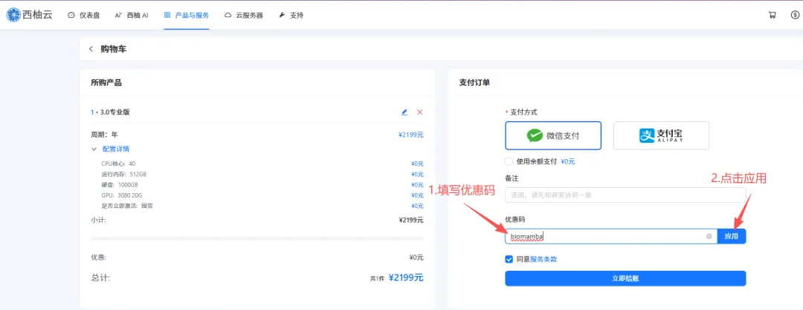
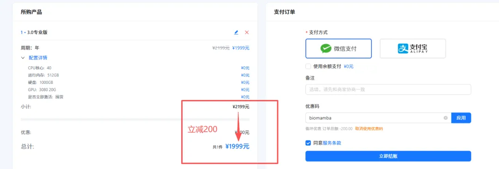
另外，可咨询文末微信号领取返现福利(200￥粉丝专属优惠券与返现可叠加)，注册链接：
https://biomamba.xiyoucloud.net/
八、损耗低
电脑的工作是有损耗的，相信大家在用自己的电脑计算时已经感受到机器的风扇在嗡嗡作响 ，倘若电脑不堪重负出现故障，随便换哪个零件 想来也比服务器的租金要高。更何况，还有可能丢数据：不推荐用自己的电脑做生信
九、数据存储有保障
相较于传统的硬盘直储，服务器的存储方式为超融合集群存储，具体优点为高可靠性、高性能高可用，并且具有在线更换硬件、恢复数据的优势。这些优点我们之前专门花推送去说过(大家的宝贝数据怎么存储才最安全)。
十、正经Linux系统
无论是windows下的子系统、双系统，还是虚拟机，与真正的Linux 环境还是有所区别。而服务器原汁原味的Linux可以帮助大家在真正的Linux环境中学习生信。没有Linux基础的小伙伴也不用担心，我们已经为大家准备好了系列教程：
生信Linux及服务器使用技巧也可以来找找组织：生信Linux交流群

详细描述及图文教程
首先，我们这个服务器价格优势 很明显了，西柚云基本只需要1/4的价格就能买到4~5倍的配置，给大家看看某大厂的报价，64GB内存一个月就要两千了：
 另外，新旧两代服务器最大的差别是内存变成了完完全全的独享 ，每个用户都单独拥有全部的内存，CPU也变成了半独享 （打个比方，原先是22人共享48核、768GB内存，现在升级为100个用户共享每台96核、3T内存的10台计算节点，每当用户觉得当前计算节点拥堵时可选择一键迁移至其它资源闲置节点，真真正正解决了当前共享服务器领域资源分配不均的情况）。并且还具有root权限 ，可以安装许多需要root的软件，这样私密性也更强。我们也会根据用户数量不断增加计算节点，保证每位用户都有充足的计算资源。
另外，新旧两代服务器最大的差别是内存变成了完完全全的独享 ，每个用户都单独拥有全部的内存，CPU也变成了半独享 （打个比方，原先是22人共享48核、768GB内存，现在升级为100个用户共享每台96核、3T内存的10台计算节点，每当用户觉得当前计算节点拥堵时可选择一键迁移至其它资源闲置节点，真真正正解决了当前共享服务器领域资源分配不均的情况）。并且还具有root权限 ，可以安装许多需要root的软件，这样私密性也更强。我们也会根据用户数量不断增加计算节点，保证每位用户都有充足的计算资源。
具体配置的服务器每年的租用价格，需要购买的可以文末加客服微信先联系一下 ，目前谈下来最终的方案是标价-200￥，填写优惠码[biomamba]立减，且有额外返现（购买后加微信Biomamba返现）。注册购买链接：https://biomamba.xiyoucloud.net/(粘贴至浏览器打开，不要从微信中跳转)
为了大家学习体验需要，免费使用两周的学习版服务器依然在运行（大家可以申请免费版或试用版学习我的教程 ，有大量运算需求时再购买 ）。试用版也是可以访问Rstudio-server 的，这样大家就不用总在命令行里操作啦。
西柚云的几点好处：1、价格优势上面已经给大家说过了，何况还有免费版供大家学习2、选择西柚云的11个理由，不解释连招3、网速方面也比较给力我下载文件时最大速度可以超过100M/S。就我个人来说，就当买个网盘用来高速传输也是很划算的。没有梯子的同学也可以试试用西柚云下一些墙外的东西。

下面演示一下基本操作流程和优势！没有用过服务器、不会安装与连接的同学也不用担心，会有客服手把手教学 ！1、下载并安装finalshell http://www.hostbuf.com/downloads/finalshell_install.exe这一步应该不用多说，下载后双击运行按默认参数点下一步直至完成安装即可。
2、连接服务器：（1）创立连接：第一次创建连接的时候可能有点麻烦，需要按以下1、2、3号箭头依次点击。
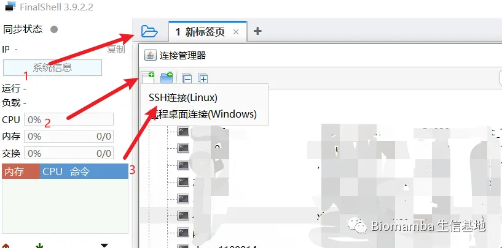
在弹出的窗口中依次填入购买成功页面显示的以下信息后点击确定。
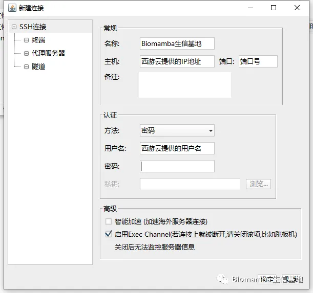
关闭finalshell并重启后即可通过双击快速连接访问服务器，以上的信息填写一次就好啦，以后直接点击这个快速连接即可： 进来以后就是Linux的页面：
进来以后就是Linux的页面： 可以看出服务器的中还有722GB的内存处于可获取状态，这个配置对大家来说肯定绰绰有余，无论运行什么样的单细胞数据应当都不在话下。
可以看出服务器的中还有722GB的内存处于可获取状态，这个配置对大家来说肯定绰绰有余，无论运行什么样的单细胞数据应当都不在话下。 3、文件传输老粉丝看过我这个教程（Linux与Windows实现文件交互的几种方式）的应该知道，如果用Putty连接Linux，文件传输还得额外安装一个FileZilla。但是Finalshell是集命令行和文件传输于一体的远程控件：
（1）点击打开文件传输页面
3、文件传输老粉丝看过我这个教程（Linux与Windows实现文件交互的几种方式）的应该知道，如果用Putty连接Linux，文件传输还得额外安装一个FileZilla。但是Finalshell是集命令行和文件传输于一体的远程控件：
（1）点击打开文件传输页面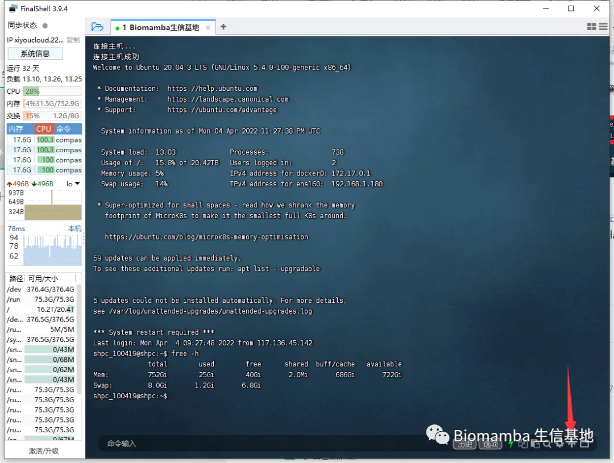
（2）即可通过下面的列表进行文件传输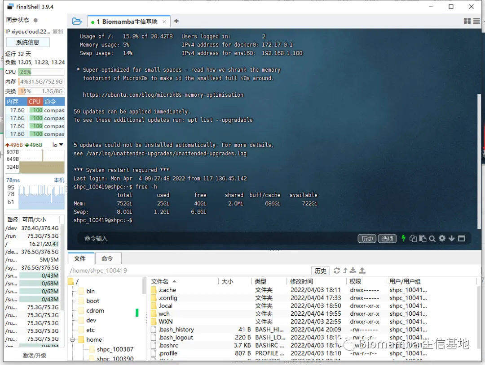
4、使用R语言
(1)R
用过Linux的都知道，在命令行敲一个R即可进入R环境，但是这种方式不太好操作。不推荐。
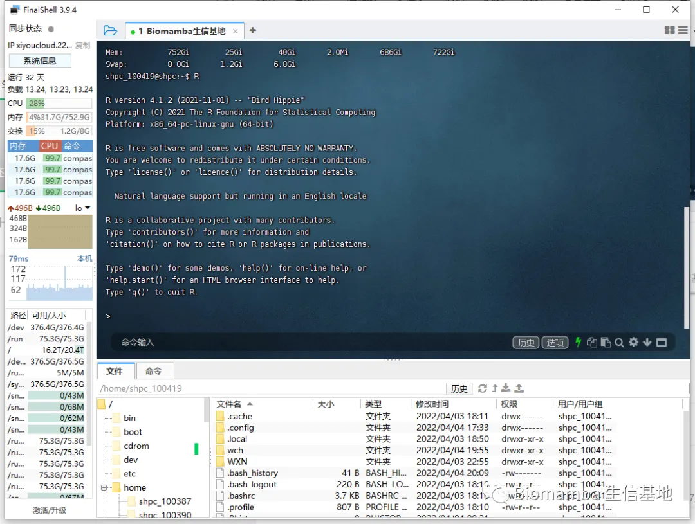
（2）Rstudio
购买产品后的页面会提供一个网页版Rstudio的链接，复制到浏览器打开即可，下面的红色箭头即可上传文件，用起来比较方便

如何联系我们

 留一个领取资料、开箱即用的单细胞分析镜像的微信号[Biomamba_zhushou]，方便各位随时交流。同时我们也构建了交流群矩阵，欢迎大家入群讨论。
大家可以阅读完这几篇之后添加给生信入门初学者的小贴士
没有检索，就没有发言权
留一个领取资料、开箱即用的单细胞分析镜像的微信号[Biomamba_zhushou]，方便各位随时交流。同时我们也构建了交流群矩阵，欢迎大家入群讨论。
大家可以阅读完这几篇之后添加给生信入门初学者的小贴士
没有检索，就没有发言权
已有生信基地联系方式的同学无需重复添加

 您点的每个赞和在看，我都认真当成了喜欢
您点的每个赞和在看，我都认真当成了喜欢